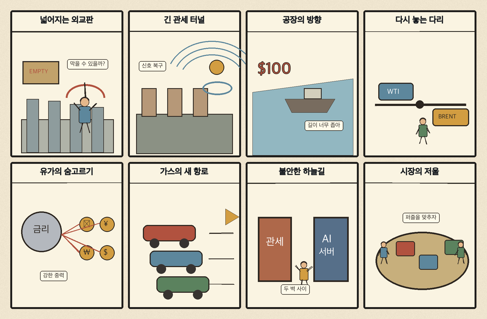
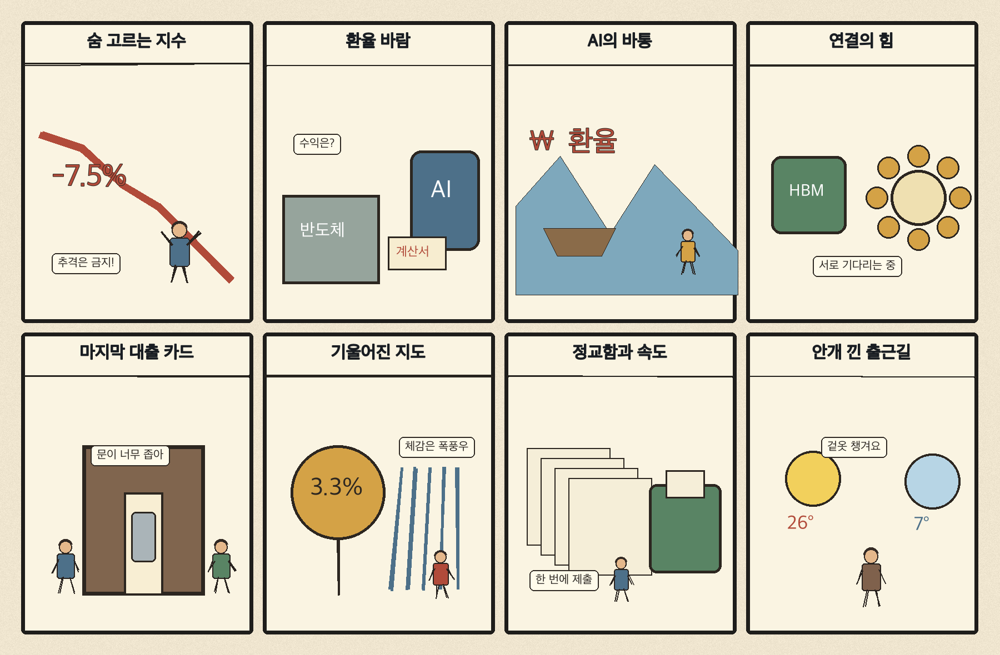

01
액센츄어 · 239.30→247.22달러 · +3.31%
내용요약 시가 대비 +3.31%로 조사군 최상위였으며 기업용 디지털 전환 수요가 상대적 방어력을 보였습니다.
예상여파 AI 투자 조정 국면에서도 서비스·컨설팅 수요는 차별화될 수 있으나 단일일 상승을 추격 신호로 보기는 어렵습니다.
MORNING_BRIEFING_20261030
작성 시각: 2026-10-30 06:33 KST · 직전 미국 정규장과 2026-10-30 KST 당일 공개 기사 기준
직전 미국 정규장인 10월 29일 뉴욕증시는 다우 -0.25%, S&P 500 -0.30%, 나스닥 -1.38%로 하락했습니다. 알파벳 실적 충격과 AI 투자비 부담이 기술주를 눌렀고 필라델피아 반도체지수도 1.42% 내렸습니다. 전일 KOSPI가 종가 기준 -1.24%, 시가 대비 -1.32%로 6000선을 반납한 만큼 오늘 국내장은 반도체 대형주의 갭 하락과 외국인 수급을 우선 확인해야 합니다.
| 지수 | 종가 | 등락률 | 한국 증시 시사점 |
|---|---|---|---|
| 다우존스 | 52,342.56 | -0.25% | 위험선호 소폭 둔화 |
| S&P 500 | 7,720.39 | -0.30% | AI·반도체 투자심리 부담 |
| 나스닥 종합 | 26,184.72 | -1.38% | AI·반도체 투자심리 부담 |
알파벳 실적 충격과 AI 투자비 우려로 기술주가 약세였습니다.
미·이란 외교 해결 기대에 국제유가가 0.76% 하락했습니다.
전일 6000선을 반납했고 시가 대비 -1.32%, KOSDAQ은 -1.90%였습니다.
기술주 충격과 필수 검증 데이터 부족으로 현금 관망입니다.
10월 29일 보고서는 급등 뒤 갭 위험과 필수 수급·컨센서스·유사 조건 표본 부족으로 공식 추천을 내지 않았습니다. 사후에 종목을 추가하지 않습니다.
| 시장 | 종가 | 등락률 | 기준 |
|---|---|---|---|
| KOSPI | 5,937.66 | -1.24% | 10월 29일 · 시가 대비 -1.32% |
| KOSDAQ | 753.23 | -2.34% | 10월 29일 · 시가 대비 -1.90% |
| 다우존스 | 52,342.56 | -0.25% | 미국 10월 29일 정규장 |
| S&P 500 | 7,720.39 | -0.30% | 미국 10월 29일 정규장 |
| 나스닥 종합 | 26,184.72 | -1.38% | 미국 10월 29일 정규장 |
액센츄어 +3.31%, 크라우드스트라이크 +2.68%로 강했습니다.
보잉 +2.62%, 캐터필러 +1.74%로 조사군 상위였습니다.
마이크론 -3.48%, 오라클 -3.17%, 슈퍼마이크로 -2.16%로 부진했습니다.
마이크로소프트 -1.86%, 아마존 -1.26%, 알파벳 -1.03%였습니다.
내용요약 시가 대비 +3.31%로 조사군 최상위였으며 기업용 디지털 전환 수요가 상대적 방어력을 보였습니다.
예상여파 AI 투자 조정 국면에서도 서비스·컨설팅 수요는 차별화될 수 있으나 단일일 상승을 추격 신호로 보기는 어렵습니다.
내용요약 기술주 전반 약세 속에서도 시가 대비 +2.68% 상승했습니다.
예상여파 사이버보안 지출의 방어적 성격을 보여주지만 높은 밸류에이션 변동성은 유의해야 합니다.
내용요약 시가 대비 +2.62% 올라 조사군 상위권을 기록했습니다.
예상여파 항공우주 공급망 심리에는 긍정적이지만 생산 정상화와 현금흐름 확인이 필요합니다.
내용요약 AI칩 매도세 속 시가 대비 -3.48%로 조사군 최하위였습니다.
예상여파 국내 HBM·메모리 종목의 단기 투자심리에 부담이며 갭 하락 뒤 수급 안정을 확인해야 합니다.
내용요약 시가 대비 -3.17% 하락하며 AI 인프라 투자비 우려를 반영했습니다.
예상여파 데이터센터 투자 확대의 수혜 기대와 자본지출 부담이 동시에 재평가될 수 있습니다.
나스닥 -1.38%와 미국 AI칩 투매는 국내 반도체·인터넷 대형주의 개장 심리에 부담입니다. 전일 KOSPI는 종가 기준 -1.24%, 시가 대비 -1.32%로 6000선을 반납했고 KOSDAQ은 시가 대비 -1.90%였습니다. 다만 WTI 하락은 수입물가에 완충 요인입니다. 오늘은 장 초반 갭 하락 뒤 외국인 현·선물 수급과 5900선 지지 여부를 확인하고 반등 추격을 피하는 편이 낫습니다.
오늘은 추천 없음 — 현금 관망
전일까지의 외국인·기관 수급, 컨센서스 변화와 30건 이상 유사 조건 표본을 함께 확보해 종합점수 75점·상승확률 60%·예상 손익비 1.5를 모두 검증한 종목이 없습니다. 미국 AI칩 투매와 국내 지수의 높은 변동성 때문에 장전 진입 위험도 큽니다.
관심 연결종목 HBM 연결반도체·전력망·사이버보안은 관찰 대상일 뿐 매수 추천이 아닙니다. 장 초반 갭 변동 종목은 추격매수를 금지합니다.
미국 반도체 약세가 국내 HBM 대형주로 전이되는지 봅니다.
WTI 102달러대와 미·이란 협상 기대의 지속 여부를 확인합니다.
6000선 반납 뒤 외국인 현·선물 수급과 지지력 회복을 점검합니다.
관세 장기화 전망이 자동차·철강 공급망에 미치는 영향을 봅니다.
핵심 요약: 미국 AI칩과 대형기술주가 투자비 부담으로 조정받는 가운데 경쟁은 TPU, HBM 연결반도체, 버티컬 AI, 데이터센터 전력으로 넓어지고 있습니다. 오늘은 성장 기대보다 자본효율과 실제 계약, 전력 확보 능력을 구분해 볼 필요가 있습니다.
내용요약 필라델피아 반도체지수가 1.42% 하락하는 등 미국 AI칩 종목에 매도세가 집중됐다는 뉴스1 당일 보도입니다.
예상여파 국내 HBM·반도체 공급망에도 단기 심리 부담이지만 개별 기업의 계약과 실적을 지수 움직임과 구분해야 합니다.
내용요약 구글이 경쟁사에도 자체 TPU를 공급하는 전략의 득실을 분석한 당일 보도입니다.
예상여파 AI칩 시장의 선택지가 넓어지면 가속기 경쟁과 맞춤형 메모리·패키징 수요가 동시에 치열해질 수 있습니다.
내용요약 AI 기반 금융 운영체제 스타트업 Collective가 시리즈B와 성장자금으로 총 1억 달러를 유치했다는 보도입니다.
예상여파 버티컬 AI 투자금이 실제 업무 자동화로 이동하고 있지만 고객 유지율과 단위경제성 검증이 중요합니다.
내용요약 HBM의 속도와 용량을 효율적으로 활용하는 연결반도체의 중요성을 다룬 매일경제 당일 기사입니다.
예상여파 메모리 성능 경쟁이 인터커넥트·패키징·전력효율로 확장되며 공급망의 수혜 범위가 넓어질 수 있습니다.
내용요약 AI 데이터센터의 병목이 반도체에서 전력 확보로 이동하며 분산형 에너지 해법이 부상한다는 당일 보도입니다.
예상여파 전력망·저장장치·원전과 가스발전 투자가 늘 수 있지만 인허가와 장기 전력계약의 경제성을 함께 봐야 합니다.
핵심 요약: 러시아는 아프리카 외교를 확대하고 미국 관세는 선거 뒤에도 장기화할 가능성이 제기됐습니다. 자동차 현지생산 유도와 유럽 관계회복 발언이 이어지는 한편, 미·이란 외교 기대는 국제유가를 낮췄습니다.
내용요약 러시아가 아프리카 48개국을 초청해 협력 확대와 영향력 강화를 추진한다는 연합뉴스 당일 보도입니다.
예상여파 자원·방산·식량을 둘러싼 러시아와 서방의 아프리카 외교 경쟁이 한층 거세질 수 있습니다.
내용요약 미국 민주당이 중간선거에서 이겨도 향후 2년간 관세율이 크게 달라지기 어렵다는 싱크탱크 분석입니다.
예상여파 기업은 선거 결과와 별개로 높은 관세를 기본 시나리오에 넣어 생산지와 조달망을 재편할 가능성이 큽니다.
내용요약 미국이 현지 생산을 확대하는 자동차 업체에 관세 완화 혜택을 주는 방침을 검토한다는 연합뉴스 보도입니다.
예상여파 완성차의 미국 투자 압력이 커지며 부품사 동반 진출과 국내 생산배분에 영향을 줄 수 있습니다.
내용요약 푸틴 러시아 대통령이 유럽과의 전쟁을 원치 않으며 관계 회복 조치를 지지한다고 밝혔다는 보도입니다.
예상여파 발언만으로 긴장이 해소되지는 않지만 실제 외교 접촉이 이어지면 에너지·방산 위험 프리미엄이 낮아질 여지가 있습니다.
내용요약 미국과 이란의 외교 해결 기대가 커지며 WTI가 배럴당 102달러대로 하락했다는 연합뉴스 보도입니다.
예상여파 유가 안정은 수입물가와 운송비 부담을 덜지만 협상 진전이 꺾이면 변동성이 다시 확대될 수 있습니다.

핵심 요약: K-반도체의 AI 공급망 중요성이 커지는 동시에 연결반도체와 전력효율이 새 경쟁축으로 떠올랐습니다. 가계의 담보대출 증가와 수도권 집중 문제를 살피고, 아침 비와 안개·큰 일교차에도 대비해야 합니다.
내용요약 연준이 한국을 AI 핵심 부품 공급국으로 언급한 가운데 K-반도체가 미국 물가와 AI 성패의 변수로 부상했다는 YTN 보도입니다.
예상여파 한국 반도체의 전략적 가치는 높아지지만 미국의 공급망 정책과 고객 집중 위험도 함께 관리해야 합니다.
내용요약 HBM의 가성비를 높일 연결반도체가 차세대 메모리 경쟁의 핵심으로 떠오른다는 당일 기사입니다.
예상여파 국내 메모리 업체의 기회가 인터커넥트와 패키징 생태계로 확장될 수 있습니다.
내용요약 가계가 자금 마련의 마지막 수단으로 예금담보대출과 보험계약대출을 늘리고 있다는 당일 보도입니다.
예상여파 고금리·생활비 부담이 취약 차주의 유동성 압박으로 번지는지 연체율과 소비 둔화를 살펴야 합니다.
내용요약 정부가 균형발전 정책을 잇달아 내놓았지만 수도권 집중 흐름을 되돌릴 수 있을지 점검한 한겨레21 기사입니다.
예상여파 정책 효과는 기업·인재 이동과 지역 일자리의 지속성으로 확인해야 하며 단기 재정투입만으로는 한계가 있습니다.
내용요약 아침까지 곳곳에 비가 내리고 낮 최고기온은 21도까지 오를 것이라는 당일 날씨 보도입니다.
예상여파 출근길 안개와 젖은 도로를 주의하고 큰 일교차에 대비한 겉옷이 필요합니다.
